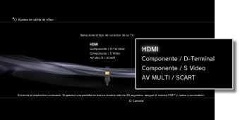
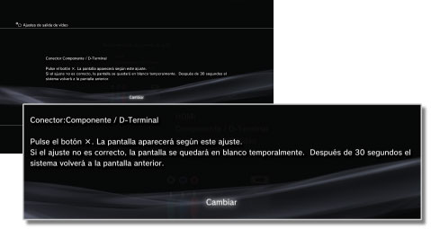
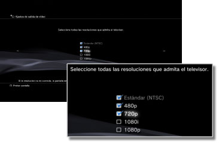
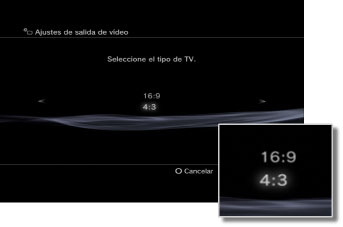
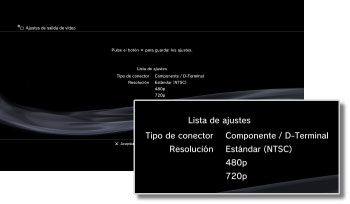

Ajustes de salida de vídeo
Puede establecer los ajustes de salida de vídeo del sistema. Seleccione los ajustes de salida que mejor se ajusten al televisor que esté utilizando.
1. |
Compruebe la resolución que admite el televisor.
La resolución (modo de vídeo) varía en función del tipo de televisor. Para obtener más información, consulte las instrucciones suministradas con el televisor.
|
2. |
Seleccione  (Ajustes) > (Ajustes) >  (Ajustes de pantalla). (Ajustes de pantalla).
|
3. |
Seleccione [Ajustes de salida de vídeo].
|
4. |
Seleccione el tipo de conector del televisor.
La resolución (modo de vídeo) varía en función del tipo de conector utilizado.

| *1 |
Las opciones del modo de vídeo varían en función de la región donde haya adquirido el sistema PS3™. En Norteamérica, Asia y otras regiones NTSC, el modo de vídeo de 480i se muestra como [Estándar (NTSC)]. En Europa y en otras regiones PAL, el modo de vídeo de 576i se muestra como [Estándar (PAL)]. Para obtener más información, consulte las instrucciones suministradas con el producto.
|
| *2 |
D-terminal es un tipo de conector que se utiliza principalmente en Japón. Las resoluciones admitidas por los terminales de D1 a D5 son las siguientes:
D5: 1080p / 720p / 1080i / 480p / 480i
D4: 1080i / 720p / 480p / 480i
D3: 1080i / 480p / 480i
D2: 480p / 480i
D1: 480i
|
| *3 |
El formato S VIDEO se utiliza principalmente en Japón.
|
| *4 |
El conector Euro-AV se incluye únicamente en los sistemas PS3™ vendidos en Europa.
|
| *5 |
El formato AV MULTI se utiliza principalmente en Japón. Si selecciona [AV MULTI / SCART], aparecerá una pantalla que le permitirá seleccionar el tipo de señal de salida.
|
| *6 |
El formato SCART se utiliza principalmente en Europa. Si selecciona [AV MULTI / SCART], aparecerá una pantalla que le permitirá seleccionar el tipo de señal de salida.
|
|
5. |
Ajuste el tamaño de visualización del televisor 3D.
Ajuste el sistema para que coincida con el tamaño de la pantalla del televisor que está utilizando.
Si el televisor que utiliza no es un televisor 3D o si no ha seleccionado [HDMI] en el paso 4, no aparecerá esta pantalla.
|
6. |
Modifique los ajustes de salida de vídeo.
Cambie la resolución de la salida de vídeo. En función del tipo de conector que haya seleccionado en el paso 4, es posible que esta pantalla no aparezca.

|
7. |
Ajuste la resolución.
Seleccione todas las resoluciones admitidas por el televisor que esté utilizando. El vídeo se emitirá automáticamente con la mayor resolución posible de entre las seleccionadas para el contenido reproducido.*
* La resolución de vídeo se selecciona en el orden de prioridad escrito a continuación: 1080p > 1080i > 720p > 480p/576p > Estándar (NTSC:480i/PAL:576i).
Si se ha seleccionado [Compuesto / S Vídeo] en el paso 4, no se mostrará la pantalla de selección de resoluciones.
Si se ha seleccionado [HDMI], también podrá seleccionar la opción de ajuste automático de la resolución (es necesario que el dispositivo HDMI se encuentre encendido). En este caso, la pantalla de selección de resoluciones no se mostrará.

|
8. |
Ajuste el tipo de televisor.
Seleccione el tipo de televisor en uso. Ajústelo únicamente si se van a emitir imágenes con una resolución de definición estándar (NTSC: 480p/480i, PAL: 576p/576i) como, por ejemplo, si se han seleccionado las opciones [Compuesto / S Vídeo] o [AV MULTI / SCART] en el paso 4.

|
9. |
Compruebe los ajustes.
Compruebe que la imagen visualizada tiene la resolución correcta para el televisor. Puede dirigirse a la pantalla anterior y comprobar los ajustes si pulsa el botón  . .

|
10. |
Guarde los ajustes.
Los ajustes de salida de vídeo se guardan en el sistema PS3™. A continuación, puede configurar los ajustes de salida de audio. Para obtener información acerca de la emisión de audio, consulte (Ajustes) >  (Ajustes de sonido) > [Audio Output Settings] en esta guía. (Ajustes de sonido) > [Audio Output Settings] en esta guía.
|
Notas
- Si los ajustes de salida de vídeo no coinciden con los requeridos por el televisor que esté utilizando, es posible que la pantalla se quede en blanco al cambiar la resolución. Sin embargo, la pantalla deberá recuperar su resolución original una vez transcurridos unos instantes. Si la pantalla permanece en blanco durante más de 30 segundos, apague el sistema. A continuación, mantenga pulsado el botón de encendido situado en la parte frontal del sistema durante al menos cinco segundos para volver a encenderlo. Se restablecerá la resolución estándar automáticamente como ajustes de salida de vídeo.
- Si se conecta un dispositivo que no es compatible con el estándar HDCP (High-bandwidth Digital Content Protection) mediante un cable HDMI, no será posible emitir el vídeo ni el audio a través del sistema.
- El contenido copyright de un disco Blu-ray Disc puede emitir señales a 1080p si se utiliza un cable HDMI conectado a un dispositivo compatible con el estándar HDCP.
- Cuando el sistema PS3™ (serie CECH-3000/4000) se conecta a un televisor mediante un cable D-terminal, un cable AV en Componentes o un cable AV múltiple (un producto de Sony Corporation), la salida de alta definición analógica debe cumplir con la tecnología de protección de los derechos de autor utilizada en Blu-ray™ (AACS (Advanced Access Content System)). El software de vídeo de discos BD (BD-ROM) y los discos BD grabados con contenido de vídeo protegido por derechos de autor (como la emisión de programas) se emiten a 480i.
- Conecte el sistema (serie CECH-4200 o posterior) mediante un cable HDMI para reproducir el software de vídeo de discos BD (BD-ROM) y los discos BD grabados con contenido de vídeo protegido por derechos de autor.